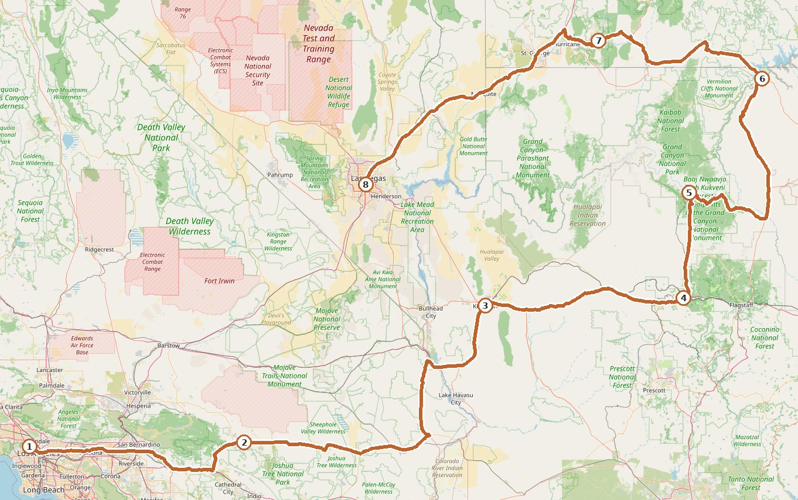

Itinerary
11.05ThuLos Angeles · Arrival: Airport → Hollywood
- Land at LAX and take the LAX FlyAway Hollywood shuttle into town: runs 24/7, every 30 minutes, $8 per person, direct to the terminal in the heart of Hollywood, about a 40-minute ride. The hotel is a 5–10 minute walk from the stop — no transfers needed.
Stay: Onyx Hollywood Hotel
11.06FriHollywood · Full Day
- Hollywood Walk of Fame
- Griffith Observatory
- In the evening, head back to the Walk of Fame and grab signature burgers and BBQ ribs at an American restaurant off Sunset Blvd — a taste of local LA nightlife
- Getting around: everything sits within a 3 km radius — walking + metro, no need for taxis
Stay: Onyx Hollywood Hotel (same as previous night)
11.07SatHollywood → Joshua Tree → Kingman≈ 2.5h + 2h
- Pick up the rental car and drive east about 2.5 hours to Joshua Tree National Park
- Exit the park at 4:00 pm, then continue east for about 2 hours to Kingman, a classic Route 66 town
- Browse the free Route 66 Museum — vintage cars, old highway signs, retro road-trip culture
Stay: Hampton Inn Kingman (Route 66)
11.08SunKingman → Route 66 Towns → Tusayan≈ 3h
- Leave Kingman at 9:00 am and follow the old Route 66 eastward
- Stop at the classic highway towns of Seligman and Williams
- At 3:00 pm, drive north for 1 hour to Tusayan near the Grand Canyon south entrance — check in early and skip the rushed morning tomorrow
Stay: Best Western Hotel
11.09MonGrand Canyon South Rim → Horseshoe Bend → Page≈ 3h
- Grand Canyon South Rim
- Horseshoe Bend
Stay: Marriott Hotel, Page
11.10TuePage → Zion National Park → Springdale≈ 2.5h
- Zion National Park
Stay: Kanaba Hotel (Zion National Park)
11.11WedSpringdale → Las Vegas≈ 2.5h
- Arrive in Las Vegas
Stay: Ellis Island Hotel, Las Vegas
🌇 After the November DST switch, sunset is around 4:45–5:00 pm — keep the long drives in daylight
🎫 America the Beautiful annual pass $80/vehicle: Joshua Tree + Grand Canyon + Zion add up to $105, so the pass pays for itself
🌡️ Big desert day–night swings: nights around 5°C in Joshua Tree, mornings near 0°C at the Grand Canyon — pack a down jacket and sun protection
🚌 Zion's main canyon is closed to private cars; ride the free in-park shuttle (runs through November)
🎫 America the Beautiful annual pass $80/vehicle: Joshua Tree + Grand Canyon + Zion add up to $105, so the pass pays for itself
🌡️ Big desert day–night swings: nights around 5°C in Joshua Tree, mornings near 0°C at the Grand Canyon — pack a down jacket and sun protection
🚌 Zion's main canyon is closed to private cars; ride the free in-park shuttle (runs through November)
Route Map

① Los Angeles 11.05 · ② Joshua Tree 11.07 · ③ Kingman 11.07 · ④ Williams 11.08 · ⑤ Grand Canyon South Rim 11.09 · ⑥ Page 11.09 · ⑦ Springdale (Zion) 11.10 · ⑧ Las Vegas 11.11
Route drawn along real roads · Basemap © OpenStreetMap contributors
Route drawn along real roads · Basemap © OpenStreetMap contributors